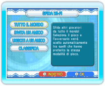

17 |
Sfida Wi-Fi (Dr. Mario) |
 |

In Dr. Mario, puoi sfidare giocatori da tutto il mondo usando la Nintendo Wi-Fi Connection. Per iniziare una partita, seleziona NINTENDO WFC dallo schermo di selezione della modalità e poi SFIDA Wi-Fi. Nota: il pulsante RESET sulla console Wii non può essere utilizzato durante la connessione alla Nintendo Wi-Fi Connection.
Nota: per selezionare INVITA UN AMICO o UNISCITI A UN AMICO, devi aver registrato almeno un codice amico nella tua lista di amici. Seleziona IMPOSTAZIONI AMICI dallo schermo del menu Nintendo WFC per registrare i codici amico. |
 |
 |
 |